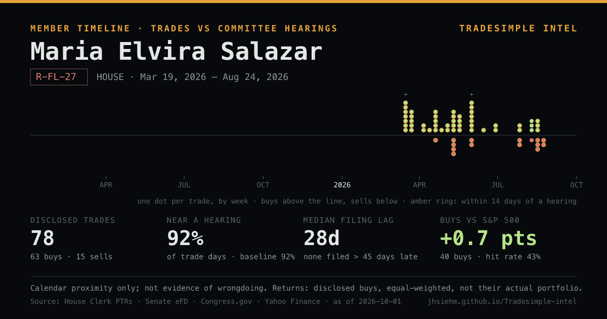

Open Maria Elvira Salazar's timeline in TradeSimple Intel
Rep. Maria Elvira Salazar (R-FL-27): 78 disclosed trades since Mar 19, 2026 · 92% of trade days within 14 days of a hearing on their committees vs 92% of all days · median filing lag 28d · disclosed buys +0.7 pts vs S&P 500 since trade (equal-weighted). Calendar proximity only.
